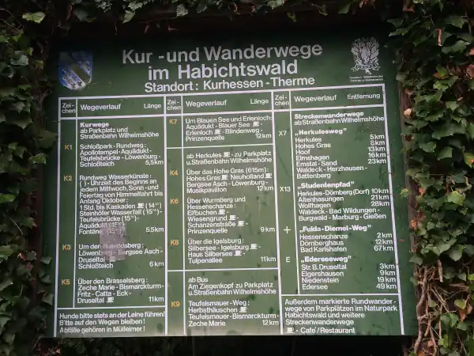

Start / Bad Wilhelmshöhe
Aaron Schiele
geprüft am
geprüft am
Was macht Bad Wilhelmshöhe aus?
Der Stadtteil ist grün und ruhig, mit alten Villen im Kurviertel und dem Park direkt vor der Tür. Seine Lage zieht seit über hundert Jahren Gäste an: Im späten 19. Jahrhundert entstanden hier Kurheime und Sanatorien, weil die Luft am Hang des Habichtswalds als besonders gut galt. 1979 stieß man bei einer Bohrung auf eine Thermalsolequelle, 1983 öffnete die Kurhessen-Therme. Ende 2020 lebten 12.262 Menschen im Stadtteil.
Was kannst du in Bad Wilhelmshöhe machen?

- Bergpark Wilhelmshöhe: rund 560 Hektar, seit 2013 UNESCO-Welterbe und ganzjährig frei zugänglich. Vom Schloss geht es bergauf zur Löwenburg und zum Herkules, mehr unter Bergpark Wilhelmshöhe.
- Wasserspiele: Von Mai bis Anfang Oktober fließt das Wasser mittwochs, sonntags und an Feiertagen vom Herkules hinunter bis zur Großen Fontäne, siehe Wasserspiele Kassel.
- Schloss Wilhelmshöhe: Gemäldegalerie und Antikensammlung, dienstags bis sonntags von 10 bis 17 Uhr, siehe Schloss Wilhelmshöhe.
- Kurhessen-Therme: Thermalsole-Bad mit Saunawelt an der Wilhelmshöher Allee, täglich von 9 bis 22 Uhr. Preise und Tipps stehen unter Kurhessen Therme.
- Wandern: Am Bergpark starten Rundwege in den Habichtswald, siehe Wandern im Habichtswald.
Wie kommst du nach Bad Wilhelmshöhe und wieder weg?
Der ICE-Bahnhof Kassel-Wilhelmshöhe liegt an der Wilhelmshöher Allee, die Information in der Empfangshalle ist täglich von 6 bis 22.30 Uhr besetzt. Von dort fährt die Tram 1 in wenigen Minuten über die Haltestellen Hessischer Rundfunk und Kurhessen-Therme bis zur Endhaltestelle Wilhelmshöhe (Park), nach rund 6 Minuten bist du am unteren Bergpark. Die Tram 4 fährt vom Bahnhof Richtung Druseltal, dort steigst du in den Bus zum Herkules. In die Innenstadt kommst du mit den Linien 1, 3 und 4.
Von der Haltestelle Wilhelmshöhe (Park) sind es rund 10 Minuten zu Fuß zum Schloss Wilhelmshöhe. Alle Verbindungen zum Park stehen unter Mit Bus und Bahn zum Bergpark.
Wo übernachtest du in Bad Wilhelmshöhe?
Wer hier übernachtet, hat den Bergpark vor der Tür. Der Vorteil: Morgens bist du im Park, bevor die Ausflügler kommen, und abends musst du nicht mehr quer durch die Stadt. Wie die Stadtteile im Vergleich abschneiden, steht unter Übernachten in Kassel.
Häufige Fragen
Warum heißt es Bad Wilhelmshöhe?
Der Name erinnert an die lange Kurtradition: Wegen der guten Luft entstanden hier im späten 19. Jahrhundert Kurheime und Sanatorien, seit 1983 gibt es die Kurhessen-Therme mit Thermalsole, dazu Kneippkuranlagen.
Wie weit ist Bad Wilhelmshöhe von der Innenstadt entfernt?
Mit der Tram 1, 3 oder 4 fährst du vom Bahnhof Wilhelmshöhe direkt in die Innenstadt bis zum Friedrichsplatz. Der Stadtteil liegt im Westen der Stadt, am Rand des Habichtswalds.
Gehört der Bergpark zu Bad Wilhelmshöhe?
Ja, der Bergpark liegt am Hang über dem Stadtteil, die Adresse lautet Schloßpark Wilhelmshöhe 1, 34131 Kassel. Der Park ist ganzjährig frei zugänglich.
Hält der ICE in Bad Wilhelmshöhe?
Ja, der Fernbahnhof Kassel-Wilhelmshöhe liegt im Stadtteil, am Willy-Brandt-Platz an der Wilhelmshöher Allee.
Quellen abgerufen am 16.11.2026
- Stadt Kassel Bergpark Wilhelmshöhe · Statistischer Jahresbericht 2020 · Anreise mit dem ÖPNV zum Bergpark
- Universität Kassel Audiowalk Bad Wilhelmshöhe
- Deutsche Bahn Bahnhof Kassel-Wilhelmshöhe
- Kurhessen-Therme Preise und Öffnungszeiten
- Hessen Kassel Heritage Schloss Wilhelmshöhe
Weiterlesen

Bergpark Wilhelmshöhe Kassel
Bergpark Wilhelmshöhe in Kassel: was dich im UNESCO-Welterbe erwartet, Eintritt (Park frei), ein Rundweg bergab für einen Tag und die Anreise.
Weiterlesen
Kurhessen Therme Kassel
Kurhessen Therme in Kassel: Preise mit Stand, Öffnungszeiten, Sauna, Regeln für Tagesgäste, Anreise mit Tram 1 und der Weg zum Bergpark.
Weiterlesen
Kassel übernachten
Übernachten in Kassel: welche Stadtteile zu deinem Plan passen, warum der Bahnhof Wilhelmshöhe zählt und wo du Ferienwohnungen findest.
Weiterlesen